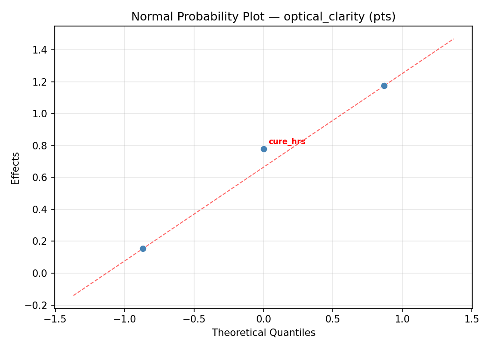
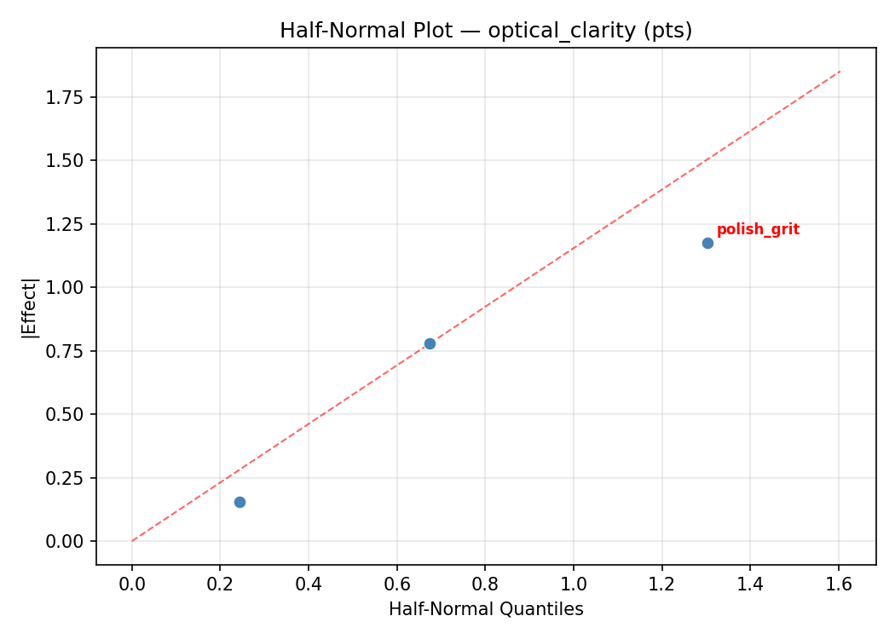
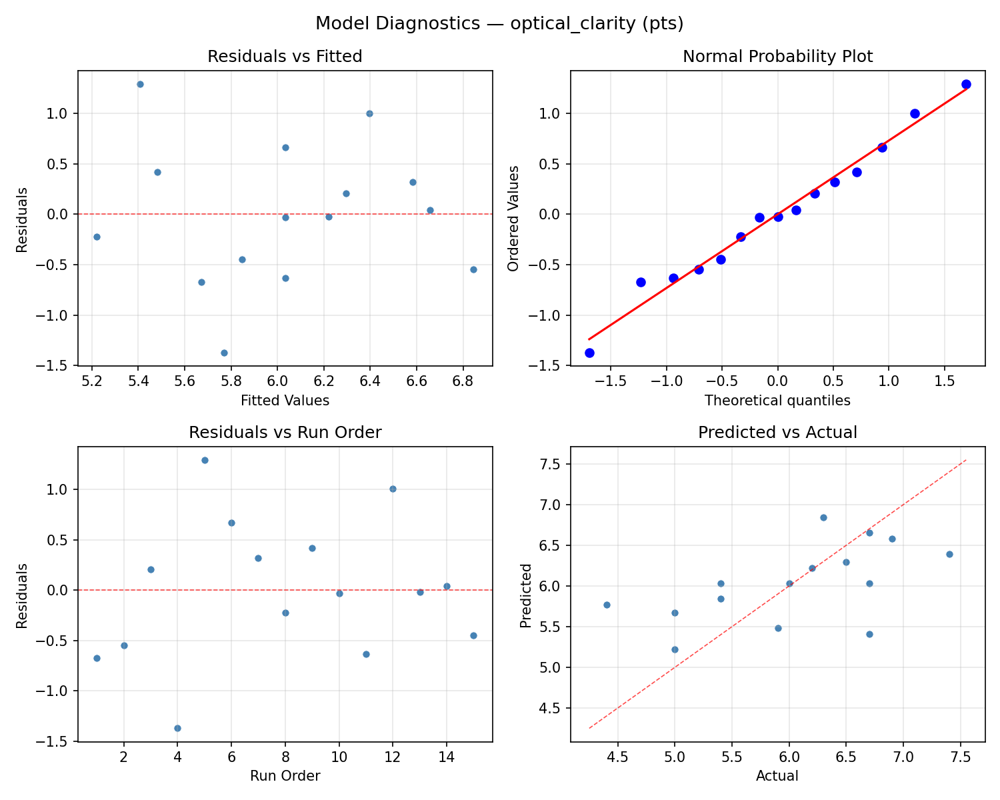
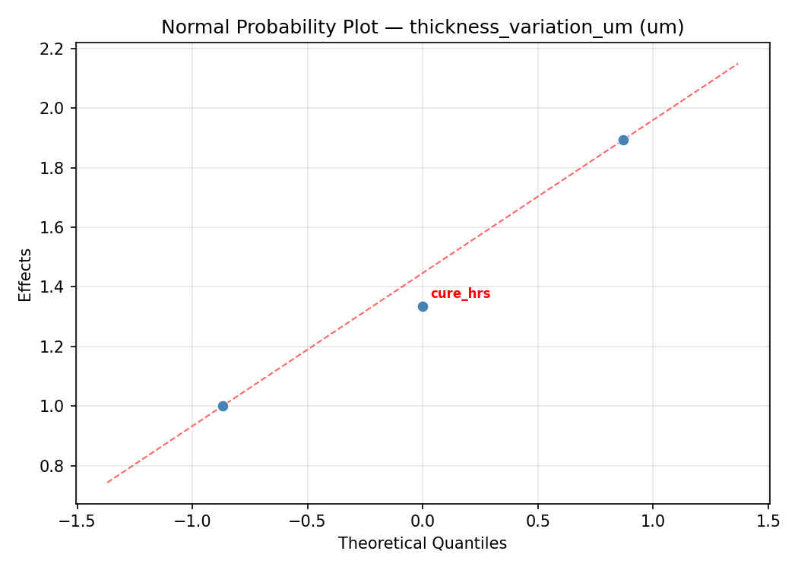
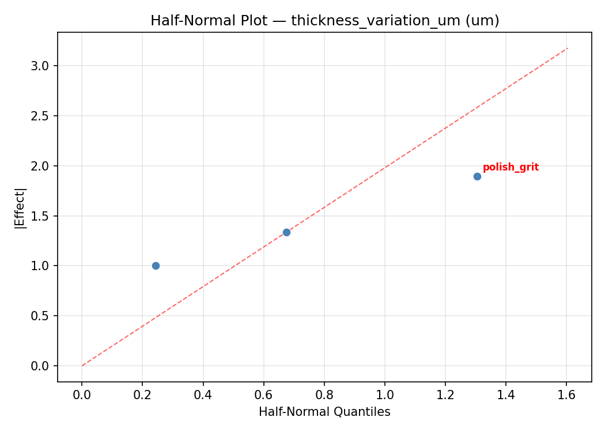
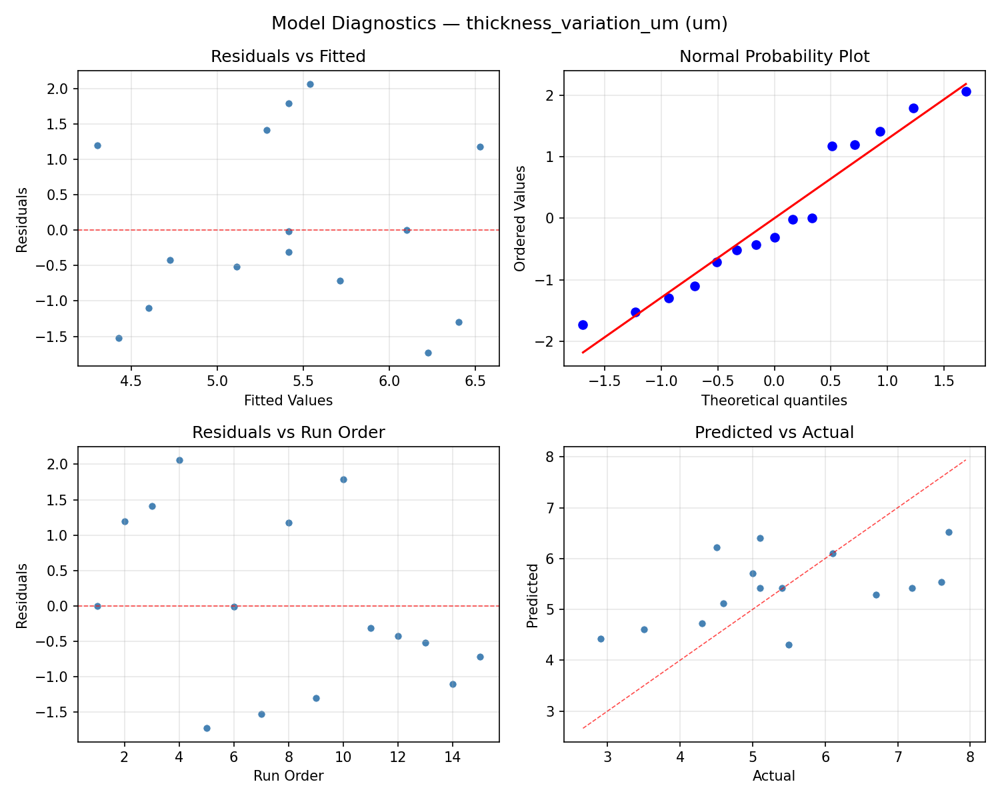

Summary
This experiment investigates rock thin section preparation. Box-Behnken design to maximize optical clarity and minimize thickness variation by tuning grinding speed, epoxy cure time, and final polish grit.
The design varies 3 factors: grind rpm (rpm), ranging from 100 to 400, cure hrs (hrs), ranging from 12 to 48, and polish grit (grit), ranging from 600 to 1200. The goal is to optimize 2 responses: optical clarity (pts) (maximize) and thickness variation um (um) (minimize). Fixed conditions held constant across all runs include rock type = granite, target um = 30.
A Box-Behnken design was chosen because it efficiently fits quadratic models with 3 continuous factors while avoiding extreme corner combinations — requiring only 15 runs instead of the 8 needed for a full factorial at two levels.
Quadratic response surface models were fitted to capture potential curvature and factor interactions. The RSM contour plots below visualize how pairs of factors jointly affect each response.
Key Findings
For optical clarity, the most influential factors were grind rpm (37.3%), cure hrs (31.9%), polish grit (30.8%). The best observed value was 7.4 (at grind rpm = 250, cure hrs = 48, polish grit = 600).
For thickness variation um, the most influential factors were cure hrs (58.7%), grind rpm (26.9%), polish grit (14.4%). The best observed value was 2.9 (at grind rpm = 100, cure hrs = 48, polish grit = 900).
Recommended Next Steps
- Run confirmation experiments at the predicted optimal settings to validate the model.
- Consider whether any fixed factors should be varied in a future study.
Experimental Setup
Factors
| Factor | Low | High | Unit |
|---|
grind_rpm | 100 | 400 | rpm |
cure_hrs | 12 | 48 | hrs |
polish_grit | 600 | 1200 | grit |
Fixed: rock_type = granite, target_um = 30
Responses
| Response | Direction | Unit |
|---|
optical_clarity | ↑ maximize | pts |
thickness_variation_um | ↓ minimize | um |
Configuration
{
"metadata": {
"name": "Rock Thin Section Preparation",
"description": "Box-Behnken design to maximize optical clarity and minimize thickness variation by tuning grinding speed, epoxy cure time, and final polish grit"
},
"factors": [
{
"name": "grind_rpm",
"levels": [
"100",
"400"
],
"type": "continuous",
"unit": "rpm"
},
{
"name": "cure_hrs",
"levels": [
"12",
"48"
],
"type": "continuous",
"unit": "hrs"
},
{
"name": "polish_grit",
"levels": [
"600",
"1200"
],
"type": "continuous",
"unit": "grit"
}
],
"fixed_factors": {
"rock_type": "granite",
"target_um": "30"
},
"responses": [
{
"name": "optical_clarity",
"optimize": "maximize",
"unit": "pts"
},
{
"name": "thickness_variation_um",
"optimize": "minimize",
"unit": "um"
}
],
"settings": {
"operation": "box_behnken",
"test_script": "use_cases/231_rock_thin_section/sim.sh"
}
}
Experimental Matrix
The Box-Behnken Design produces 15 runs. Each row is one experiment with specific factor settings.
| Run | grind_rpm | cure_hrs | polish_grit |
|---|
| 1 | 250 | 12 | 600 |
| 2 | 250 | 30 | 900 |
| 3 | 400 | 30 | 1200 |
| 4 | 400 | 30 | 600 |
| 5 | 250 | 30 | 900 |
| 6 | 250 | 30 | 900 |
| 7 | 100 | 30 | 1200 |
| 8 | 400 | 12 | 900 |
| 9 | 250 | 12 | 1200 |
| 10 | 400 | 48 | 900 |
| 11 | 100 | 30 | 600 |
| 12 | 250 | 48 | 1200 |
| 13 | 100 | 12 | 900 |
| 14 | 100 | 48 | 900 |
| 15 | 250 | 48 | 600 |
Step-by-Step Workflow
1
Preview the design
$ python doe.py info --config use_cases/231_rock_thin_section/config.json
2
Generate the runner script
$ python doe.py generate --config use_cases/231_rock_thin_section/config.json \
--output use_cases/231_rock_thin_section/results/run.sh --seed 42
3
Execute the experiments
$ bash use_cases/231_rock_thin_section/results/run.sh
4
Analyze results
$ python doe.py analyze --config use_cases/231_rock_thin_section/config.json
5
Get optimization recommendations
$ python doe.py optimize --config use_cases/231_rock_thin_section/config.json
6
Multi-objective optimization
With 2 competing responses, use --multi to find the best compromise via Derringer–Suich desirability.
$ python doe.py optimize --config use_cases/231_rock_thin_section/config.json --multi
7
Generate the HTML report
$ python doe.py report --config use_cases/231_rock_thin_section/config.json \
--output use_cases/231_rock_thin_section/results/report.html
Features Exercised
| Feature | Value |
|---|
| Design type | box_behnken |
| Factor types | continuous (all 3) |
| Arg style | double-dash |
| Responses | 2 (optical_clarity ↑, thickness_variation_um ↓) |
| Total runs | 15 |
Analysis Results
Generated from actual experiment runs using the DOE Helper Tool.
Response: optical_clarity
Top factors: grind_rpm (37.3%), cure_hrs (31.9%), polish_grit (30.8%).
ANOVA
| Source | DF | SS | MS | F | p-value |
|---|
| Source | DF | SS | MS | F | p-value |
| grind_rpm | 2 | 1.8615 | 0.9308 | 5.817 | 0.0276 |
| cure_hrs | 2 | 1.0658 | 0.5329 | 3.331 | 0.0886 |
| polish_grit | 2 | 1.0562 | 0.5281 | 3.301 | 0.0901 |
| Lack | of | Fit | 6 | 5.5898 | 0.9316 |
| Pure | Error | 2 | 0.3200 | | |
| Error | 8 | 5.9098 | 0.1600 | | |
| Total | 14 | 9.8933 | 0.7067 | | |
Pareto Chart

Main Effects Plot

Normal Probability Plot of Effects

Half-Normal Plot of Effects

Model Diagnostics

Response: thickness_variation_um
Top factors: cure_hrs (58.7%), grind_rpm (26.9%), polish_grit (14.4%).
ANOVA
| Source | DF | SS | MS | F | p-value |
|---|
| Source | DF | SS | MS | F | p-value |
| grind_rpm | 2 | 3.5355 | 1.7678 | 6.978 | 0.0176 |
| cure_hrs | 2 | 12.5230 | 6.2615 | 24.717 | 0.0004 |
| polish_grit | 2 | 0.9813 | 0.4906 | 1.937 | 0.2061 |
| Lack | of | Fit | 6 | 10.8708 | 1.8118 |
| Pure | Error | 2 | 0.5067 | | |
| Error | 8 | 11.3775 | 0.2533 | | |
| Total | 14 | 28.4173 | 2.0298 | | |
Pareto Chart

Main Effects Plot

Normal Probability Plot of Effects

Half-Normal Plot of Effects

Model Diagnostics

Response Surface Plots
3D surfaces fitted with quadratic RSM. Red dots are observed data points.
optical clarity cure hrs vs polish grit

optical clarity grind rpm vs cure hrs

optical clarity grind rpm vs polish grit

thickness variation um cure hrs vs polish grit

thickness variation um grind rpm vs cure hrs

thickness variation um grind rpm vs polish grit

Multi-Objective Optimization
When responses compete, Derringer–Suich desirability finds the best compromise.
Each response is scaled to a 0–1 desirability, then combined via a weighted geometric mean.
Overall Desirability
D = 0.9939
Per-Response Desirability
| Response | Weight | Desirability | Predicted | Dir |
|---|
optical_clarity |
1.5 |
|
7.52 0.9899 7.52 pts |
↑ |
thickness_variation_um |
1.0 |
|
1.31 1.0000 1.31 um |
↓ |
Recommended Settings
| Factor | Value |
|---|
grind_rpm | 400 rpm |
cure_hrs | 12 hrs |
polish_grit | 600 grit |
Source: from RSM model prediction
Trade-off Summary
Sacrifice = how much worse than single-objective best.
| Response | Predicted | Best Observed | Sacrifice |
|---|
thickness_variation_um | 1.31 | 2.90 | -1.59 |
Top 3 Runs by Desirability
| Run | D | Factor Settings |
|---|
| #12 | 0.8380 | grind_rpm=100, cure_hrs=12, polish_grit=900 |
| #14 | 0.7804 | grind_rpm=250, cure_hrs=12, polish_grit=600 |
Model Quality
| Response | R² | Type |
|---|
thickness_variation_um | 0.7393 | quadratic |
Full Multi-Objective Output
============================================================
MULTI-OBJECTIVE OPTIMIZATION
Method: Derringer-Suich Desirability Function
============================================================
Overall desirability: D = 0.9939
Response Weight Desirability Predicted Direction
---------------------------------------------------------------------
optical_clarity 1.5 0.9899 7.52 pts ↑
thickness_variation_um 1.0 1.0000 1.31 um ↓
Recommended settings:
grind_rpm = 400 rpm
cure_hrs = 12 hrs
polish_grit = 600 grit
(from RSM model prediction)
Trade-off summary:
optical_clarity: 7.52 (best observed: 7.40, sacrifice: -0.12)
thickness_variation_um: 1.31 (best observed: 2.90, sacrifice: -1.59)
Model quality:
optical_clarity: R² = 0.6119 (quadratic)
thickness_variation_um: R² = 0.7393 (quadratic)
Top 3 observed runs by overall desirability:
1. Run #7 (D=0.8605): grind_rpm=400, cure_hrs=12, polish_grit=900
2. Run #12 (D=0.8380): grind_rpm=100, cure_hrs=12, polish_grit=900
3. Run #14 (D=0.7804): grind_rpm=250, cure_hrs=12, polish_grit=600
Full Analysis Output
=== Main Effects: optical_clarity ===
Factor Effect Std Error % Contribution
--------------------------------------------------------------
grind_rpm 0.8464 0.2171 37.3%
cure_hrs 0.7250 0.2171 31.9%
polish_grit 0.7000 0.2171 30.8%
=== ANOVA Table: optical_clarity ===
Source DF SS MS F p-value
-----------------------------------------------------------------------------
grind_rpm 2 1.8615 0.9308 5.817 0.0276
cure_hrs 2 1.0658 0.5329 3.331 0.0886
polish_grit 2 1.0562 0.5281 3.301 0.0901
Lack of Fit 6 5.5898 0.9316 5.823 0.1538
Pure Error 2 0.3200 0.1600
Error 8 5.9098 0.1600
Total 14 9.8933 0.7067
=== Summary Statistics: optical_clarity ===
grind_rpm:
Level N Mean Std Min Max
------------------------------------------------------------
100 4 5.9500 1.0536 4.4000 6.7000
250 7 6.3714 0.6775 5.4000 7.4000
400 4 5.5250 0.8057 5.0000 6.7000
cure_hrs:
Level N Mean Std Min Max
------------------------------------------------------------
12 4 5.7000 1.3115 4.4000 7.4000
30 7 6.0000 0.6110 5.0000 6.7000
48 4 6.4250 0.6898 5.4000 6.9000
polish_grit:
Level N Mean Std Min Max
------------------------------------------------------------
1200 4 6.4500 1.0344 5.0000 7.4000
600 4 5.7500 0.4123 5.4000 6.2000
900 7 5.9571 0.9235 4.4000 6.7000
=== Main Effects: thickness_variation_um ===
Factor Effect Std Error % Contribution
--------------------------------------------------------------
cure_hrs 2.5000 0.3679 58.7%
grind_rpm 1.1464 0.3679 26.9%
polish_grit 0.6143 0.3679 14.4%
=== ANOVA Table: thickness_variation_um ===
Source DF SS MS F p-value
-----------------------------------------------------------------------------
grind_rpm 2 3.5355 1.7678 6.978 0.0176
cure_hrs 2 12.5230 6.2615 24.717 0.0004
polish_grit 2 0.9813 0.4906 1.937 0.2061
Lack of Fit 6 10.8708 1.8118 7.152 0.1277
Pure Error 2 0.5067 0.2533
Error 8 11.3775 0.2533
Total 14 28.4173 2.0298
=== Summary Statistics: thickness_variation_um ===
grind_rpm:
Level N Mean Std Min Max
------------------------------------------------------------
100 4 5.6000 1.8815 3.5000 7.6000
250 7 4.9286 1.3048 2.9000 7.2000
400 4 6.0750 1.1615 5.1000 7.7000
cure_hrs:
Level N Mean Std Min Max
------------------------------------------------------------
12 4 6.7000 1.6145 4.3000 7.7000
30 7 5.3714 0.7973 4.5000 6.7000
48 4 4.2000 1.1916 2.9000 5.4000
polish_grit:
Level N Mean Std Min Max
------------------------------------------------------------
1200 4 5.0000 1.7321 2.9000 6.7000
600 4 5.4750 1.1701 4.6000 7.2000
900 7 5.6143 1.5453 3.5000 7.7000
Optimization Recommendations
=== Optimization: optical_clarity ===
Direction: maximize
Best observed run: #12
grind_rpm = 250
cure_hrs = 48
polish_grit = 600
Value: 7.4
RSM Model (linear, R² = 0.1342, Adj R² = -0.1020):
Coefficients:
intercept +6.0333
grind_rpm +0.0625
cure_hrs +0.2375
polish_grit -0.3250
RSM Model (quadratic, R² = 0.5058, Adj R² = -0.3837):
Coefficients:
intercept +5.4333
grind_rpm +0.0625
cure_hrs +0.2375
polish_grit -0.3250
grind_rpm*cure_hrs -0.6000
grind_rpm*polish_grit +0.3750
cure_hrs*polish_grit -0.2750
grind_rpm^2 +0.4333
cure_hrs^2 +0.3333
polish_grit^2 +0.3583
Curvature analysis:
grind_rpm coef=+0.4333 convex (has a minimum)
polish_grit coef=+0.3583 convex (has a minimum)
cure_hrs coef=+0.3333 convex (has a minimum)
Notable interactions:
grind_rpm*cure_hrs coef=-0.6000 (antagonistic)
grind_rpm*polish_grit coef=+0.3750 (synergistic)
Predicted optimum (from linear model, at observed points):
grind_rpm = 250
cure_hrs = 48
polish_grit = 600
Predicted value: 6.5958
Surface optimum (via L-BFGS-B, linear model):
grind_rpm = 400
cure_hrs = 48
polish_grit = 600
Predicted value: 6.6583
Model quality: Weak fit — consider adding center points or using a different design.
Factor importance:
1. polish_grit (effect: 0.7, contribution: 40.4%)
2. cure_hrs (effect: 0.5, contribution: 31.9%)
3. grind_rpm (effect: 0.4, contribution: 27.7%)
=== Optimization: thickness_variation_um ===
Direction: minimize
Best observed run: #7
grind_rpm = 100
cure_hrs = 48
polish_grit = 900
Value: 2.9
RSM Model (linear, R² = 0.0381, Adj R² = -0.2242):
Coefficients:
intercept +5.4133
grind_rpm -0.3000
cure_hrs -0.1625
polish_grit +0.1375
RSM Model (quadratic, R² = 0.3898, Adj R² = -0.7085):
Coefficients:
intercept +6.6333
grind_rpm -0.3000
cure_hrs -0.1625
polish_grit +0.1375
grind_rpm*cure_hrs +0.6000
grind_rpm*polish_grit -0.5000
cure_hrs*polish_grit +0.3250
grind_rpm^2 -0.6292
cure_hrs^2 -1.2542
polish_grit^2 -0.4042
Curvature analysis:
cure_hrs coef=-1.2542 concave (has a maximum)
grind_rpm coef=-0.6292 concave (has a maximum)
polish_grit coef=-0.4042 concave (has a maximum)
Notable interactions:
grind_rpm*cure_hrs coef=+0.6000 (synergistic)
grind_rpm*polish_grit coef=-0.5000 (antagonistic)
cure_hrs*polish_grit coef=+0.3250 (synergistic)
Predicted optimum (from linear model, at observed points):
grind_rpm = 100
cure_hrs = 12
polish_grit = 900
Predicted value: 5.8758
Surface optimum (via L-BFGS-B, linear model):
grind_rpm = 400
cure_hrs = 48
polish_grit = 600
Predicted value: 4.8133
Model quality: Weak fit — consider adding center points or using a different design.
Factor importance:
1. cure_hrs (effect: 1.3, contribution: 52.4%)
2. grind_rpm (effect: 0.8, contribution: 31.7%)
3. polish_grit (effect: 0.4, contribution: 15.9%)